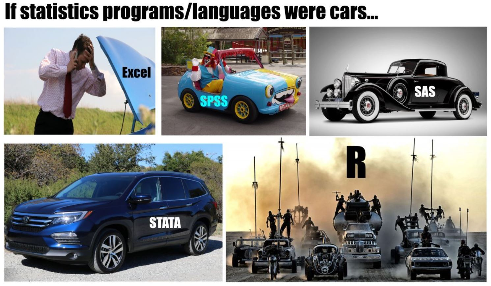

PSYCH 2126: Research Methods
2024-01-20
Chapter 1 Introduction
This guidebook will walk you through all of the steps necessary to complete your term assignment. The steps involve:
Phase 1:
Downloading and installing R Statistical Software
Downloading and installing R Studio for your specific platform (Windows or Mac)
Customizing R and getting comfy with the basics
Phase 2:
Design your study
Generate your data
Visualize your data
Test your results
Write up your results
Knit your R document into a lovely APA formatted pdf for handing in (don’t worry, you’ll learn how to do this part!)
1.1 Why R?
A key goal of any psychology researcher is to not only design and execute reproducible experiments, but to communicate those results to other people. Today, researchers are moving away from using multiple pieces of software to conduct and communicate their research. Each step that a researcher takes from importing their data to Excel, moving it to SPSS for analyses and then copy-pasting tables and visualizations into Word, is a step that must be remembered and done all over again when re-doing the analysis. As you can imagine, it is very easy to forget a step, not to mention disguise data funny business along the way.

With R, Rather than having to use multiple pieces of software you use one piece of FREE software. With one project which includes a record of everything you’ve done. This means if you or another researcher wants to rerun the analysis with new data, its a simple matter of putting the data in a project folder and voila, rerun the same code. When you’re ready to publish? Your entire manuscript can be written in R along with your analysis and eventually publish the data–everything is there to easily and exactly replicate every step of the process.
This quick guide is meant as a companion to your assignment. It is not meant to teach you all the ins and outs of R, as that would be several courses on its own, instead, you will get a small taste of R and its capabilities in hopes that it might ignite the spark of curiosity to learn more. As, the other great thing about R is there is a WEALTH of free resources available on the internet where you can find the answer to any analysis question. I will share lots of handy resources in the Resource section. R is where it’s at.